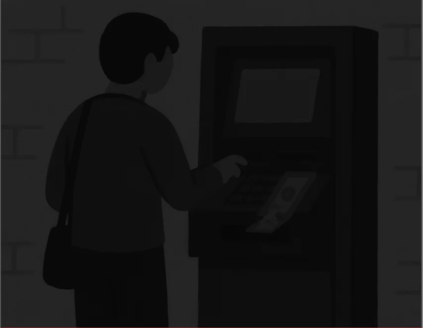
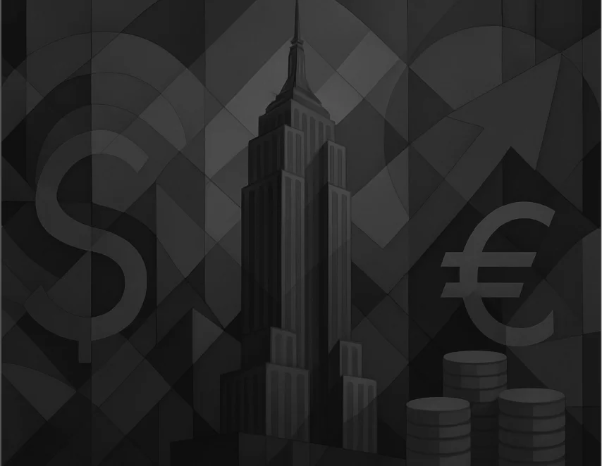

Entrepreneurship
Forward-thinking business strategies that align innovation with long-term value creation and impact at scale
Business Case
ScheduleService & Product Design
Welcome! My portfolio is always evolving — take a look around.
01 / 00
Forward-thinking business strategies that align innovation with long-term value creation and impact at scale
Business Case
Schedule
A mobile cash-out journey rebuilt around the three pain points behind 40% of fund-related contacts
Service Design
See case
Cross product consistency by standardizing design patterns and aligning feature behaviors across platforms
UX / UI
See caseWith a background in International Relations, I’ve always sought to work on impact-driven projects.
Over time, I found in the fast-paced environment of large corporations a space where I could see the results of my work while continuously learning and evolving.
Through design, I’ve consolidated a systemic approach that connects people and technology, enabling the scale and evolution of products and services.
01 / 00

Involvement in employee experience initiatives and the development of solutions that drive operational efficiency
Project analyst

Broad experience as a design consultant, particularly in discovery and concept definition phases
Service designer

Focused on digital product experience in the financial market, building on my early years as a design manager
Design manager
01 / 00
Four roles, ten years — tap Read on any card for what I did there.
Jan 2024 – Present · Sao Paulo, SP, Brazil
Aug 2022 – Jun 2024 · Sao Paulo, SP, Brazil
Nov 2019 – Aug 2022 · Sao Paulo, SP, Brazil
Sep 2017 – Nov 2019 · Sao Paulo, SP, Brazil
01 / 00
“Amanda is a dedicated and thoughtful leader, deeply committed to elevating her team’s work to the highest level. She’s also always available to help, and actively finds ways to support the team.
As part of her team, I’ve felt empowered to contribute strategically: she consistently encourages autonomy and enables design to influence every stage of the process.
Working with her taught me how valuable it is to build strong relationships and create meaningful connections to overcome day to day barriers. I can confidently say she’s the best manager I’ve had so far. I have nothing but praise for her.”
“Amanda and I worked together for a couple of years at Accenture as part of the same design team. Throughout that time, she consistently demonstrated professionalism, proactivity, and strong collaboration skills.
She’s deeply committed to the quality of her work and approaches every challenge with a clear focus on both user needs and the business rules that shape design decisions.
Amanda brings a leadership mindset and a senior-level perspective to every project. She combines a strong theoretical foundation with critical, forward-thinking ideas that drive real impact. Her strategic thinking truly stands out, and she is a reliable, inspiring presence on any team.”
01 / 00
Three programmes — tap Read on any card for the detail.
2022 · Rio, RJ, Brazil
2018 · Piracicaba, SP, Brazil
2016 · Franca, SP, Brazil